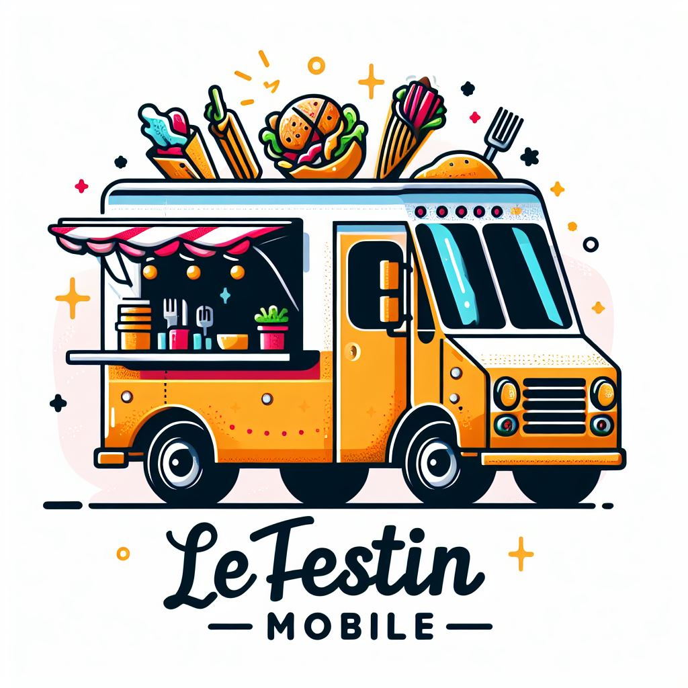

Bienvenue au Festin Mobile, votre food truck préféré ! Explorez notre délicieux menu, suivez notre itinéraire, et laissez-nous égayer votre journée avec des saveurs uniques. Bon appétit !
Chez nous, la passion pour la cuisine est guidée par notre engagement envers la communauté. Nous nous approvisionnons en produits locaux, mettant en valeur la fraîcheur et la saveur de notre région. Chaque bouchée que vous dégustez chez nous est une célébration des ingrédients locaux En soutenant Le Festin Mobile, vous soutenez également nos producteurs et notre communauté. Venez vivre une expérience culinaire unique, où chaque bouchée raconte une histoire locale. Nous sommes fiers de servir la communauté avec passion et saveur, un repas à la fois. Bon appétit !